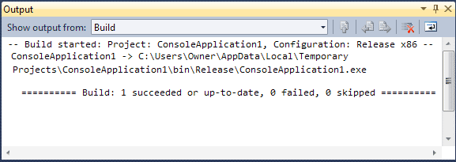
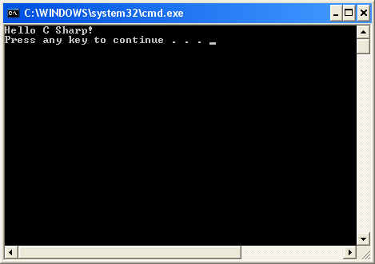
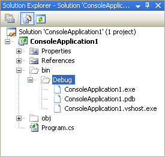
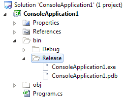
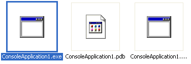

How to Run your C# Programmes
You can test your programme a number of ways. First, though, it has to be built. This is when everything is checked to see if there are any errors. Try this:
- From the View menu at the top of Visual C# Express, click Output. You’ll see a window appear at the bottom. (In C# 2010, if you can't see an Output entry, click the Tools menu. From the Tools menu, select Settings > Expert Settings. The Output menu item should then appear on the View menu.)
- From the Build menu at the top of Visual C# Express, click Build Solution
- You should see the following report:

The final line is this:
Build: 1 succeeded or up-to-date, 0 failed, 0 skipped
That's telling you that everything is OK.
Now try this:
- Delete the semicolon from the end of your line of code
- Click Build > Build Solution again
- Examine the output window (version 2012 of C# will just show and error and won't build)
This time, you should see these two lines at the end of the report:
Compile complete -- 1 errors, 0 warnings
Build: 0 succeeded or up-to-date, 1 failed, 0 skipped
So it's telling you that it couldn't build your solution because there was 1 error.
Put the semicolon back at the end of the line. Now click Debug from the menu at the top of Visual C# Express. From the Debug menu, select Start Debugging.
You should see a black DOS window appear and then disappear. Your programme has run successfully!
To actually see your line of text, click Debug > Start Without Debugging. You should now see this:

And that's your programme! Have a look at the Solution Explorer on the right. Because the project has been built, you'll see two more files under Debug:

However, in C# 2010 you'll see a Release folder. Expand this:

We now have a ConsoleApplication1.exe and ConsoleApplication1.pdb. The exe file is an executable programme, and it appears in the bin/debug folder. Switch back to Windows Explorer, if you still have it open. You'll see the exe file there. (In the Release folder in C# 2010, but in the Debug folder in earlier versions):

You could, if you wanted, create a desktop shortcut to this exe file. When you double click the desktop shortcut, the programme will run.
But that's enough of Console Applications - we'll move on to creating Windows Applications.